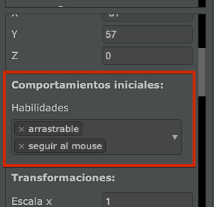

При створенні ігор актори мають певну повідінку, яка настільки поширена, що нам не потрібно програмувати її за допомогою коду.
Прикладами цієї типової поведінки може бути можливість змусити актора рухатися за допомогою клавіатури, перетягнути актора за допомогою миші тощо.
Ми називаємо цю поведінку "Навичками", і цікаво те, що ми можемо взяти будь-якого актора та "навчити" його будь-яких навичок, щоб покращити нашу гру.
Одним із варіантів додавання навичок актору є використання властивостей акторів. Одна з таких властивостей називається "Навички", для якої ми зазначаємо одну або кілька навичок, яким хочемо навчити актора на початку сцени.

Інший варіант - навчити актора умінню за допомогою коду.
Уявіть, що ми хочемо створити карткову гру, де користувач повинен мати можливість переміщувати картку по екрану за допомогою миші або дотику на мобільному пристрої. Першим кроком є створення актора з образом, який нас цікавить:
І ось що цікаво: щоб гравець міг переміщувати цього актора по екрану, ми просто повинні "навчити" актора можливості перетягування:
Нижче наведено список доступних навичок:
Якщо в будь-який момент ви захочете видалити навички актора, ви можете просто викликати функцію olvidar таким чином:
Для акторів також можна створювати спеціальні навички.
По-перше, ви повинні створити клас, який успадковує від Habilidad і реалізувати методи iniciar, actualizar і terminar.
Наприклад, ось код навички, який слід розмістити внизу будь-якого актора:
class GirarMuyRapido extends Habilidad {
iniciar() {
// тут ви можете отримати доступ до this.actor
}
actualizar() {
this.actor.rotacion += 15;
}
terminar() {
// тут ви можете отримати доступ до this.actor
}
}Потім ви можете взяти якогось актора зі своєї гри і навчити його цій навичці за допомогою двох інструкцій:
this.pilas.habilidades.vincular("girar muy rapido", GirarMuyRapido);
this.aprender("girar muy rapido");Як тільки ви оголосите нові навички в коді, вони можуть бути використані для будь-якого іншого актора. Все, що вам потрібно зробити, це додати наступний код до методу iniciar обраного актора ("girar muy rapido" - обертатися дуже швидко):
this.aprender("girar muy rapido");